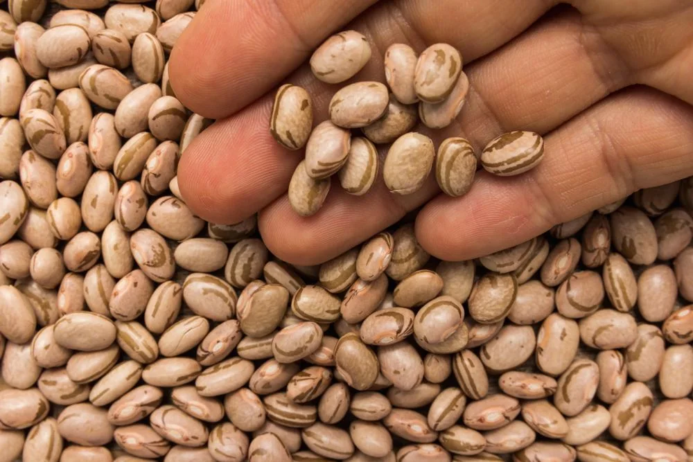
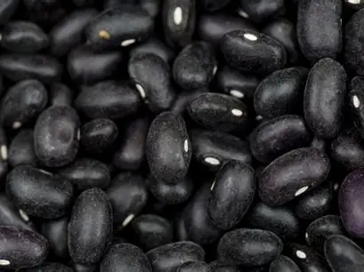
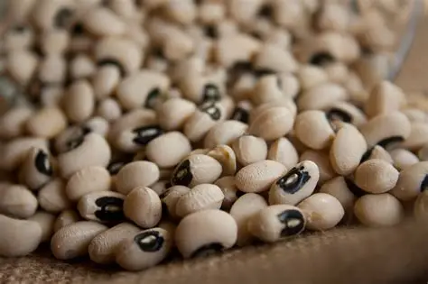
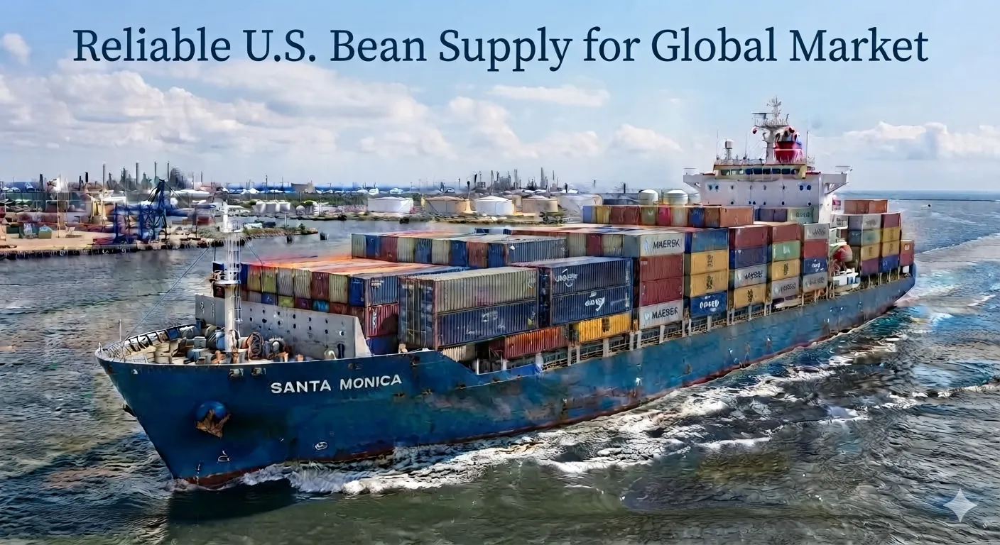

WestStar Food Co. connects trusted agricultural supply networks with quality products, flexible packaging, and export solutions for importers, distributors, retailers, and food manufacturers worldwide.
Request a Quote Explore ProductsWestStar Food Co. combines U.S. agricultural supply relationships with packaging, logistics, and export support to serve customers worldwide.
Quality pinto beans, black beans, and pulses sourced for international markets.
Supporting importers and distributors with dependable supply solutions.
Options designed for retailers, food manufacturers, and wholesale buyers.
Creating long-term relationships throughout the agricultural supply chain.
WestStar Food Co. supplies high-demand dry bean varieties for importers, distributors, retailers, foodservice buyers, and food manufacturers across North American and international markets.

A major dry bean variety widely used throughout Mexico, Latin America, retail markets, foodservice, and food manufacturing.

A high-demand variety for Latin American cuisine, retail distribution, wholesale markets, and food processing applications.

A versatile white bean commonly used in canned foods, institutional products, food manufacturing, and international markets.
WestStar Food Co. supports international buyers with quality-focused sourcing, product specifications, export documentation, and logistics coordination for reliable shipments.
Quality-focused sourcing and product requirements designed for international markets.
Clear product information, varieties, and packaging options for buyer requirements.
Support with required paperwork and documentation processes for international shipments.
Coordination of required certificates according to destination market requirements.

WestStar Food Co. connects reliable North American agricultural supply with international buyers through quality products, export documentation support, and logistics coordination.
From origin to destination, WestStar helps customers move dry bean products efficiently to global markets.
Request Export Information